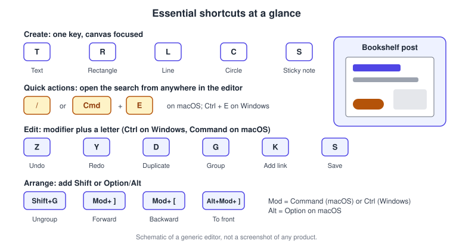
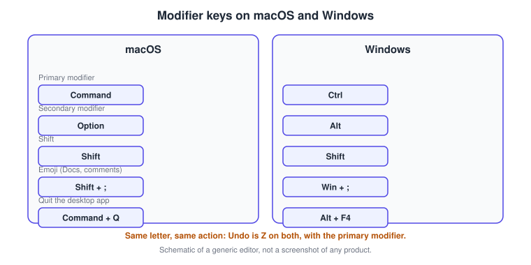
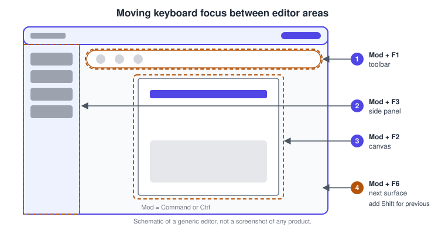
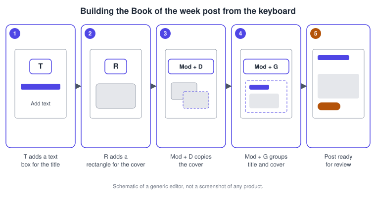
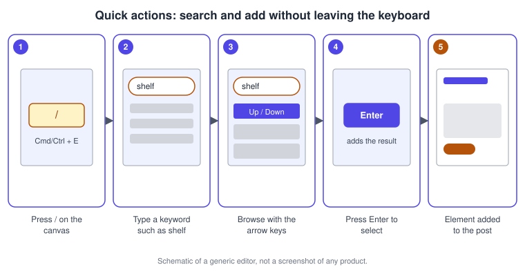
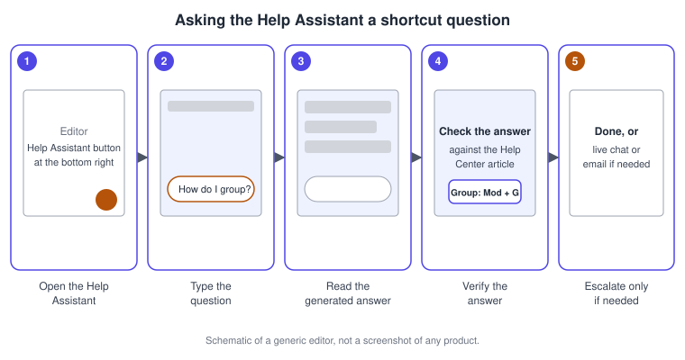

Keyboard Shortcuts and Quick Actions
|
This content was generated with the assistance of AI and should be verified against the official documentation before being relied on in production. |
This page was checked against the official Canva Help Center on 2026-11-07. It covers the keyboard shortcuts of the Canva editor in a desktop browser and in the Canva desktop app for macOS and Windows, the quick actions search that opens with the slash key, and the Help Assistant, the chat that answers product questions from inside the editor. The shortcuts apply to every design type that opens in the editor (presentations, social posts, whiteboards, videos and the other Visual Suite products), with a few shortcuts that the official list marks as specific to Canva Docs, to comments or to video.
Plans: the shortcuts and quick actions are part of the editor itself and the Help Center articles do not tie them to a paid plan, so they are available on Free, Pro, Business, Enterprise, Education and Nonprofits accounts alike. What each offering adds on top of the editor is compared at Canva pricing; no prices are repeated here. The Help Assistant is not available in every language and is not available for some Canva Education subscriptions, and an administrator can restrict what it may generate. The Help Center articles assign no Canva AI usage tier (Standard, Premium or Ultra) to quick actions or to the Help Assistant, and none of the shortcuts is an AI feature. Keyboard shortcuts and quick actions are generally available. The assistant-style Canva AI 2.0, launched as a research preview on 2026-04-16 and still without a published general availability date, is a separate experience in its own side panel tab and is not covered here (see Canva AI Assistant).
The running example is the launch campaign of Bookshelf, the fictitious book-tracking app that is designed in the Figma section of this site. Here the campaign designer assembles the "Book of the week" social post, adds artwork through quick actions, and uses keyboard focus controls to review the post without touching the mouse.
Why learn the shortcuts
Canva is a mouse-first editor, so the shortcuts are not required, but they matter in three situations. They speed up repeated edits such as duplicating, grouping and nudging when a campaign has dozens of pages. They make the editor usable for people who cannot use a pointer, because the editor has shortcuts that move focus between its areas. And they are the fastest route to a feature whose location you have forgotten, because the quick actions search finds features by name.
The official page lists the shortcuts in groups: basic, element, text, video, zoom, page view and comment shortcuts, and a separate group for the desktop app. This page follows the same grouping and adds the Bookshelf procedures and the practical notes.

Modifier keys on macOS and Windows
Every shortcut in the official list is given for both operating systems, and the two lists differ mostly in the modifier keys. The primary modifier is Command on macOS and Ctrl on Windows, and the secondary modifier is Option on macOS and Alt on Windows. Shift is the same on both. A few shortcuts are different in other ways: the emoji shortcut for Canva Docs and comments uses the Windows key on Windows, and the elbowed line shortcut uses Backslash with Command on macOS and with Shift on Windows. The tables below spell the symbols out (for example "right bracket" instead of the bracket character) so that they read the same everywhere.

The official page presents a macOS tab and a Windows tab for every group, so the tables on this page put the two side by side. Where a shortcut is the same on both systems the macOS and Windows columns repeat it.
Basic shortcuts
These shortcuts work anywhere in the editor, whatever is selected.
| Action | macOS | Windows |
|---|---|---|
Undo |
Command + Z |
Ctrl + Z |
Redo |
Command + Y, or Shift + Command + Z |
Ctrl + Y, or Shift + Ctrl + Z |
Save |
Command + S |
Ctrl + S |
Select all |
Command + A |
Ctrl + A |
Open or close the side panel |
Command + / |
Ctrl + / |
Add a link |
Command + K |
Ctrl + K |
Add an empty page |
Command + Return |
Ctrl + Enter |
Delete an empty page |
Command + Delete |
Ctrl + Backspace |
Show layers |
Option + 1 |
Alt + 1 |
Lock guides |
Option + Command + ; |
Alt + Ctrl + ; |
Jump to the comment on the selected element |
Option + Command + J |
Alt + Ctrl + J |
Go to page |
Option + Command + G |
Alt + Ctrl + G |
Toggle duration |
Option + D |
Alt + D |
Command + P |
Ctrl + P |
|
Add an emoji (Canva Docs and comments only) |
Shift + ; |
Win + ; |
Open quick actions |
/ or Command + E |
/ or Ctrl + E |
The shortcut for the quick actions search appears in this table because it is a basic one. It is described in detail in the Quick actions section.
Single-key tools
Four letters add the basic shapes, and two more add text and a sticky note. They work when the canvas has the focus and nothing is being typed, which is the reason they need no modifier key.
| Action | macOS | Windows |
|---|---|---|
Add text |
T |
T |
Add a rectangle |
R |
R |
Add a line |
L |
L |
Add a circle |
C |
C |
Add a sticky note |
S |
S |
Add an elbowed line |
Command + Backslash |
Shift + Backslash |
The shapes, lines and sticky notes are placed from the Tools tab when you use the mouse, which is explained in Drawing and the Tools Tab and Elements, Shapes, Lines and Graphics.
Element shortcuts
The element shortcuts select, duplicate, group, lock and arrange the items on the page. They need an element to be selected, except the selection keys, which start a selection.
| Action | macOS | Windows |
|---|---|---|
Delete the selected elements |
Delete |
Backspace or Delete |
Turn element multi-select on or off (with an active selection) |
F8 |
F8 |
Multi-select the closest element up, left, down or right |
Shift + W, A, S or D |
Shift + W, A, S or D |
Select the next or previous element |
Tab or Shift + Tab |
Tab or Shift + Tab |
Duplicate the selected elements |
Command + D |
Ctrl + D |
Group |
Command + G |
Ctrl + G |
Ungroup |
Command + Shift + G |
Ctrl + Shift + G |
Lock an element |
Option + Shift + L |
Alt + Shift + L |
Justify elements level |
Command + Shift + J |
Ctrl + Shift + J |
Arrange forward |
Command + right bracket |
Ctrl + right bracket |
Arrange backward |
Command + left bracket |
Ctrl + left bracket |
Arrange to front |
Option + Command + right bracket |
Alt + Ctrl + right bracket |
Arrange to back |
Option + Command + left bracket |
Alt + Ctrl + left bracket |
Tidy up elements |
Option + Shift + T |
Alt + Shift + T |
The multi-select keys move the selection to the closest element in the direction of the letter (W up, A left, S down, D right), and F8 turns multi-select on or off while a selection is active. Together with Tab and Shift plus Tab they let you walk through every element of a page without a pointer. Arranging forward and backward changes the stacking order one step at a time, and arranging to the front or back moves the element to the end of the stack; the stacking model is explained in Layers, Alignment and Arrangement.
Moving, rotating and resizing
| Action | macOS | Windows |
|---|---|---|
Move by a small step |
Arrow keys |
Arrow keys |
Move by a large step |
Shift + Arrow keys |
Shift + Arrow keys |
Rotate left or right (small) |
Option + , or Option + . |
Alt + , or Alt + . |
Rotate left or right (large) |
Option + Shift + , or Option + Shift + . |
Alt + Shift + , or Alt + Shift + . |
Toggle between proportional and single-axis resize |
F2 |
F2 |
Resize by a small step |
Command + Arrow keys |
Ctrl + Arrow keys |
Resize by a large step |
Shift + Command + Arrow keys |
Shift + Ctrl + Arrow keys |
The small and large steps let you place an element precisely: a small step for the final adjustment and a large step to cross the page quickly. The resize shortcuts use the same modifier as the move shortcuts but add Command (macOS) or Ctrl (Windows), and F2 switches between resizing in proportion and resizing along one axis.
Text shortcuts
The text shortcuts work while a text box is being edited or is selected. The paragraph style shortcuts (body text, title, subtitle and headings H3 to H5) are, according to the official page, available only in Canva Docs.
| Action | macOS | Windows |
|---|---|---|
Open the font menu |
Shift + Command + F |
Shift + Ctrl + F |
Find and replace |
Command + F |
Ctrl + F |
Bold |
Command + B |
Ctrl + B |
Italic |
Command + I |
Ctrl + I |
Underline |
Command + U |
Ctrl + U |
Strikethrough |
Shift + Command + S |
Shift + Ctrl + S |
Subscript |
Command + , |
Ctrl + , |
Superscript |
Command + . |
Ctrl + . |
Uppercase |
Shift + Command + K |
Shift + Ctrl + K |
Align left |
Shift + Command + L |
Shift + Ctrl + L |
Align center |
Shift + Command + C |
Shift + Ctrl + C |
Align right |
Shift + Command + R |
Shift + Ctrl + R |
Decrease or increase the font size by one |
Shift + Command + , or Shift + Command + . |
Shift + Ctrl + , or Shift + Ctrl + . |
Decrease or increase line spacing |
Option + Command + Down or Up |
Alt + Ctrl + Down or Up |
Decrease or increase letter spacing |
Option + Command + , or Option + Command + . |
Alt + Ctrl + , or Alt + Ctrl + . |
Anchor text to the top, middle or bottom |
Command + Shift + H, M or B |
Ctrl + Shift + H, M or B |
Numbered list |
Command + Shift + 7 |
Ctrl + Shift + 7 |
Bulleted list |
Command + Shift + 8 |
Ctrl + Shift + 8 |
Checklist |
Not listed on the macOS tab |
Ctrl + Shift + 9 |
Copy the text style |
Option + Command + C |
Alt + Ctrl + C |
Paste the text style |
Option + Command + V |
Alt + Ctrl + V |
Apply the body text style (Canva Docs only) |
Option + Command + 0 |
Alt + Ctrl + 0 |
Apply the title style H1 (Canva Docs only) |
Option + Command + 1 |
Alt + Ctrl + 1 |
Apply the subtitle style H2 (Canva Docs only) |
Option + Command + 2 |
Alt + Ctrl + 2 |
Apply the heading style H3 (Canva Docs only) |
Option + Command + 3 |
Alt + Ctrl + 3 |
Apply the subheading style H4 (Canva Docs only) |
Option + Command + 4 |
Alt + Ctrl + 4 |
Apply the section header style H5 (Canva Docs only) |
Option + Command + 5 |
Alt + Ctrl + 5 |
Font choice, sizes, spacing and the type scale are covered in Text and Typography. The copy and paste text style pair is the keyboard way of applying the Bookshelf title style to every page, and in Canva Docs the heading shortcuts give a document its structure without opening the style menu.
Zoom and page view shortcuts
| Action | macOS | Windows |
|---|---|---|
Zoom in |
Command + Plus |
Ctrl + Plus |
Zoom out |
Command + Minus |
Ctrl + Minus |
Zoom to actual size |
Command + 0 |
Ctrl + 0 |
Zoom to fit |
Option + Command + 0 |
Alt + Ctrl + 0 |
Zoom to fill |
Shift + Command + 0 |
Shift + Ctrl + 0 |
Show rulers and guides |
Shift + R |
Shift + R |
Scrolling view |
Option + Command + 1 |
Alt + Ctrl + 1 |
Thumbnail view |
Option + Command + 2 |
Alt + Ctrl + 2 |
Grid view |
Option + Command + 3 |
Alt + Ctrl + 3 |
Presentation mode |
Option + Command + P |
Alt + Ctrl + P |
The three page views (scrolling, thumbnail and grid) are explained in Editor Tour. Presentation mode starts the full-screen preview of a design from the keyboard.
Video and comment shortcuts
| Action | macOS | Windows |
|---|---|---|
Play or pause the video |
Space |
Space |
Mute or unmute the video |
M |
M |
Add a comment |
Option + Command + N |
Alt + Ctrl + N |
Add an emoji to a comment |
Shift + ; |
Shift + ; |
The comment group also lists keys for new lines and for submitting a comment, which differ between the two systems and between a new line and a submission. The key for submitting a comment is listed on the official page under the comment shortcuts; the table above leaves it out because the macOS and Windows entries use different modifier names, so read it there for your system. The comment workflow itself is in Collaboration, Comments and Version History.
Desktop app shortcuts
The Canva desktop app shows each design in its own tab, so it has an additional group of shortcuts for tabs and for the window. The official page lists a macOS app list and a Windows app list.
| Action | macOS | Windows |
|---|---|---|
Quit the whole app |
Command + Q |
Alt + F4 |
Reload the whole app |
Command + R |
Ctrl + R |
Close the current tab |
Command + W |
Ctrl + W |
Select the next tab |
Option + Command + Right |
Ctrl + PageDown or Ctrl + Tab |
Select the previous tab |
Option + Command + Left |
Ctrl + PageUp or Ctrl + Shift + Tab |
Re-open the last closed tab |
Command + Shift + T |
Ctrl + Shift + T |
Create a new design |
Command + T |
Ctrl + T |
Focus a design tab, 1 to 8 |
Command + 1 to 8 |
Ctrl + 1 to 8 |
Switch to the last tab |
Command + 9 |
Ctrl + 9 |
Open the Settings page |
Command + , |
Ctrl + , |
Open the Home page |
Command + Shift + H |
Ctrl + Shift + H |
Zoom in the app interface |
Command + Shift + Plus |
Ctrl + Shift + Plus |
Zoom out the app interface |
Command + Shift + Minus |
Ctrl + Shift + Minus |
Reset app interface scaling |
Shift + Command + 0 |
Shift + Ctrl + 0 |
Close the window |
Shift + Command + W |
Alt + F4 |
Select all visible items on the page |
Command + A |
Ctrl + A |
The desktop app, its installers and its offline behaviour are described in Desktop, Mobile and Offline; the Help Center article Get started with the Canva Desktop App has the download links and the requirements. In the browser, the tab shortcuts belong to the browser and not to Canva.
Quick actions
Quick actions is a search box that opens over the editor and finds both content and features. It accepts a keyword and lists matching elements, graphics, photos, templates and videos. It also offers design recommendations such as photos, fonts and graphics that match the current design, and it accepts the name of a Canva feature (the Help Center names Magic Write, Background Remover and the Photo Editor as examples) so that a single key press replaces a hunt through the side panel. According to the Help Center it also reaches actions such as adding animations, downloading and sharing the design and opening the Projects folder. The article states that the feature is currently only available on a computer.
To open it, click the quick actions button, press the slash key, or press Command + E on macOS or Ctrl + E on Windows. Type what you are looking for and the suggestions appear while you type. Move through them with the arrow keys or by scrolling, press Enter to select one, or choose See all to continue in the side panel. The Help Center gives a quick test: press the slash key and type "heart" to add a heart to the design.
Two things in the editor share a similar name and are easy to confuse.
| Name | What it is | How you reach it |
|---|---|---|
Quick actions search |
A search and command box that finds content and features by name |
The slash key, |
Quick actions toolbar |
The contextual toolbar below the header that replaced the fixed toolbar in the "glow up" editor. It suggests editing options for the selected element: for an image, cropping, filters and effects; for text, font, size and style |
It appears when you select an element |
The toolbar can be expanded and the edit panel opens when you pick one of its options. The panel features depend on what is selected, and the layout of the redesigned editor is described in Editor Tour. While you edit text, keys are typed as text, so move the focus to the canvas before using the slash key.
Keyboard focus and navigation
The editor has a set of shortcuts that move the keyboard focus between its areas, which is what makes it possible to work without a pointer. They are listed on the official page under basic shortcuts and are repeated here as a table.
| Action | macOS | Windows |
|---|---|---|
Move focus to the editor toolbar |
Command + F1 |
Ctrl + F1 |
Move focus to the canvas |
Command + F2 |
Ctrl + F2 |
Move focus to the side panel |
Command + F3 |
Ctrl + F3 |
Move to the next surface |
Command + F6 |
Ctrl + F6 |
Move to the previous surface |
Shift + Command + F6 |
Shift + Ctrl + F6 |

The Help Center article on accessibility settings points to the same shortcuts and adds that you can use a screen reader with keyboard shortcuts to navigate and edit designs in a desktop browser. The same article collects the other settings that affect keyboard and low-vision work: light, dark and high contrast modes, video autoplay, a longer display time for on-screen messages, the language of a design for screen readers, and the Reduce motion setting. Accessibility of the designs themselves, such as alt text and the Design Accessibility check, is covered in Accessibility in Canva.
The Help Assistant
The Help Assistant answers questions about Canva features, editing questions and billing issues in a chat, and it can route you to the support team. It is reachable from the homepage, from the Settings page and from the editor, where its button sits at the bottom right. You type a question or send a voice message, and the assistant generates an answer. The article advises double-checking the answers, which is why the Bookshelf procedure below ends with a comparison against the Help Center article. If the problem needs a closer look, the assistant points you to the support team by live chat or by email, and the article tells you not to include sensitive information such as passwords or card details.
When the answer involves an app that imports media, adds a QR code or upscales an image, the assistant may suggest an app quick action that opens the Apps tab of the editor. That shortcut is shown even when no app is installed yet.
On access, the Help Center states that student accounts see Canva-related help only by default, and that Canva Education administrators and owners can enable design help for students. Administrators can also set who the assistant may generate original content for under Settings, Permissions, Magic and AI; when the assistant is restricted, other members are pointed to help articles related to the query instead.
Desktop and mobile
| Surface | Keyboard behaviour | Notes |
|---|---|---|
Desktop browser |
The full shortcut list applies; tab shortcuts belong to the browser |
Quick actions search and the screen reader keyboard support are available on a computer |
Desktop app (macOS and Windows) |
The same editor shortcuts plus the desktop app group for tabs, window, settings and interface zoom |
Notifications and updates are managed by the app |
Mobile apps (phone and tablet) |
No keyboard shortcut list; the editor is touch driven |
The quick actions search is documented as available on computers only. A keyboard toolbar appears above the on-screen keyboard while a text is edited, with font style, color and size, and swiping reveals more options. More actions for a selected element appear by swiping the toolbar to More, from the floating toolbar, or with a long press |
The mobile apps, their tabs and offline behaviour are covered in Desktop, Mobile and Offline. The Help Center documents shortcut lists only for the macOS and Windows environments, so no mobile shortcut is described here.
Pitfalls
-
Single keys act on the canvas. Pressing T, R, L, C or S while a text box is open types the letter instead of adding a tool. Click the empty canvas first, or move focus to the canvas with its shortcut.
-
Keyboard layouts. Shortcuts with punctuation (comma, period, semicolon, slash, brackets and backslash) depend on where those keys sit on your layout, and a layout that needs a modifier to reach a bracket changes the combination. Test the arrange and elbowed line shortcuts on your own keyboard before teaching them to a team.
-
Docs-only shortcuts. The paragraph style shortcuts (body, title and headings) are available only in Canva Docs; on a social post they do nothing.
-
Browser and operating system shortcuts. A combination that the browser or the operating system already uses may be handled before it reaches the editor. If a shortcut does nothing in the browser, try it in the desktop app, which has its own list for tabs and windows.
-
Two Redo shortcuts. Redo is
Command + YorShift + Command + Zon macOS andCtrl + YorShift + Ctrl + Zon Windows; both work. -
Quick actions is not the toolbar. Quick actions is the search, the quick actions toolbar is the contextual bar. Teach the two with their full names.
-
Quick actions on mobile. The search is documented for computers only, so a team that works from phones cannot rely on it.
-
Windows and macOS lists are not mirrors. The checklist shortcut is listed on the Windows tab only, and the emoji shortcut is different. When you write team documentation, copy both columns from the table above and re-check the official page after major editor updates.
-
The assistant can be wrong. The Help Assistant generates answers; verify an answer against the Help Center article before you hand it to your team.
Numbered procedures on the Bookshelf scenario
Build the Book of the week post from the keyboard
The campaign designer starts a square social post and builds its first layout with the keyboard. The result is a title, a cover rectangle and a grouped block that is ready for the brand template.
-
Open a new Instagram post design and click an empty part of the canvas so that the canvas has the focus.
-
Press
Tto add a text box, and type the title "Book of the week". -
Click an empty part of the canvas to leave the text box, then press
Rto add a rectangle that stands for the book cover. -
With the rectangle selected, press
Command + D(macOS) orCtrl + D(Windows) to duplicate it, and use the arrow keys to nudge the copy, holding Shift for large steps. -
Press Tab or Shift plus Tab to walk through the elements, or use the multi-select keys W, A, S and D to extend the selection to the closest element.
-
Press
Command + G(macOS) orCtrl + G(Windows) to group the title and the cover, and use the arrange shortcuts to send the group behind or in front of other elements. -
If a step was wrong, press
Command + Z(macOS) orCtrl + Z(Windows) to undo it.

Add artwork with quick actions
The designer needs a decorative element and a feature, and uses quick actions to reach both without opening the side panel.
-
Press the slash key, or press
Command + E(macOS) orCtrl + E(Windows), while the canvas has the focus. The quick actions box opens. -
Type a keyword for what you need, such as "heart" or "shelf". Suggestions for elements, graphics, photos, templates and videos appear while you type.
-
Move through the suggestions with the arrow keys, or choose See all to continue in the side panel.
-
Press Enter to add the selected suggestion to the post.
-
Open quick actions again and type the name of a feature, for example Background Remover, to reach it directly while an image is selected.

Review the post without the mouse
Before the post goes to the content planner, the designer reviews it with focus shortcuts, which is also the way a keyboard-only teammate would work.
-
Press
Command + F2(macOS) orCtrl + F2(Windows) to move focus to the canvas. -
Press
Command + F1orCtrl + F1to move focus to the editor toolbar and use the arrow keys and Tab to reach the options for the selected element. -
Press
Command + F3orCtrl + F3to move focus to the side panel, for example to pick an element. -
Press
Command + F6orCtrl + F6to move to the next surface, and add Shift to go back. -
Press
Alt + Ctrl + 2(Windows) orOption + Command + 2(macOS) for the thumbnail view, andAlt + Ctrl + PorOption + Command + Pfor presentation mode.
Ask the Help Assistant a shortcut question
When a shortcut is not on the list, the designer asks the assistant and verifies the answer.
-
In the editor, select the Help Assistant button at the bottom right.
-
Type the question, for example "How do I group elements?", or send a voice message with the chat using voice button.
-
Read the generated answer.
-
Compare the answer with the shortcut tables on this page or with the official shortcuts article, because the article advises double-checking generated answers.
-
If the assistant cannot solve the problem, follow its pointer to live chat or email, and leave out passwords and card details.

Keyboard-first checklist for the Bookshelf campaign
| Task | Keys to use |
|---|---|
Add the title and the cover |
|
Copy the cover for every page |
|
Keep title and cover together |
|
Apply the title style to a new text |
Copy and paste the text style |
Find a feature quickly |
Slash, or |
Check the whole campaign at once |
Thumbnail or grid view |
Present the launch deck |
Presentation mode |
Where the books are outdated
The two books that accompany this section predate the current editor, and printed shortcut lists in particular become stale as the editor changes. The following statements were compared with the official Help Center on 2026-11-07.
| Printed statement | Current state | Checked |
|---|---|---|
A printed keyboard shortcuts list (Yellow Pen, p. 229) is a complete reference |
The official page now groups shortcuts into basic, element, text, video, zoom, page view, comment and desktop app lists, with separate macOS and Windows tabs |
2026-11-07 |
The editor toolbar is a fixed bar above the canvas |
The "glow up" editor shows a contextual quick actions toolbar and an edit panel, and the slash key opens the separate quick actions search |
2026-11-07 |
The AI helper in the editor is called Notes and AI assistant (Yellow Pen, p. 24) |
Questions about the product go to the Help Assistant; creating with AI is the Canva AI 2.0 experience, launched as a research preview on 2026-04-16 |
2026-11-07 |
The full list of book corrections is collected in What Changed Since Older Guides.
Recent changes
| Date | Change |
|---|---|
2026-04-16 |
Canva AI 2.0 launched as a research preview with its own assistant experience; the Help Assistant remains the chat for product help |
Documented on 2026-11-07 |
The "glow up" editor with a quick actions toolbar, edit panel and redesigned side panel is the editor described in the Help Center, and quick actions search is opened with the slash key or with Command or Ctrl plus E |
Documented on 2026-11-07 |
The shortcuts article lists the desktop app group with tab, window and interface zoom shortcuts, and lists Shift plus Ctrl plus 9 for a checklist on Windows |